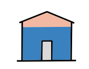

Research Output Template
Short template for research outputs in the Homes, Heat and Healthy Kids Study
Abstract
short summary of the research - please see elements.html for a full list of the poossible elements you can use in the file
The Homes, Heat and Healthy Kids (HHHK) study is a population-based research study led by the University of Edinburgh. The purpose of the study is to better understand how housing conditions and the ability to adequately heat homes are associated with respiratory infections and related health outcomes in young children in Scotland.
Old, damp and under-heated homes are known to be associated with poorer child health, but there is limited evidence quantifying these effects at population level, identifying which children are most affected, or assessing how housing and energy efficiency characteristics modify health risks. The HHHK study aims to address these gaps to support evidence-based policy and service planning in housing, energy and child health.

Methods
The study uses existing administrative data that have already been collected by public sector organisations for purposes such as healthcare delivery, civil registration, housing and public services. No new data are collected directly from children or families.
The HHHK study uses a combination of health, demographic, housing and environmental data, which may include:
- health records relating to hospital admissions, outpatient attendances and GP consultations
- birth and demographic information
- housing characteristics and energy efficiency information linked to residential properties
- area-level information such as deprivation, environmental conditions and energy costs
- grouped financial and economic indicators derived from commercial data sources
Data linkage is carried out by trusted organisations using established governance processes. Researchers access the data only within a secure Safe Haven environment and only for the approved purposes of the HHHK study.
Where individual-level data are used, they are pseudonymised before researchers access them, this means researchers do not have access to names, addresses or other direct identifiers. Some datasets are provided only in grouped or area-level form and do not contain personal data.
Conclusion
The data is going to be used to better understand how housing conditions and the ability to adequately heat homes are associated with respiratory infections and related health outcomes in young
- to be informed about how your personal data are used
- to object to certain types of processing
- to complain to the Information Commissioner's Office (ICO)
Because this study uses pseudonymised data for research in the public interest, and researchers cannot identify individuals, some rights (such as access to individual records) may not apply in the usual way.
Contact details
If you have questions about this study or how data are used for research purposes, please contact:
Homes, Heat and Healthy Kids Study Team
Centre for Medical Informatics
Usher Institute
University of Edinburgh
5-7 Little France Road
Edinburgh
EH16 4UX
Email: hhhk@ed.ac.uk